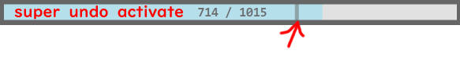

0.必要セッティング
1.ツールの選択方法
2.ショートカットキー
3.ペンオプション
4.メニューボタン
5.リプレイモード
6.アプリ初期化
7.Lassoツール使い方
8.キャンバスサイスの変更
9.参考レイヤー使い方
10.DEMO <- 戻る
1.ツールの選択方法
2.ショートカットキー
3.ペンオプション
4.メニューボタン
5.リプレイモード
6.アプリ初期化
7.Lassoツール使い方
8.キャンバスサイスの変更
9.参考レイヤー使い方
10.DEMO <- 戻る
必要セッティング
ワコムドライバー設定のマッピングの「デジタルイング機能を使う」のチェックを外してください。 これをしないと線を描くのが少し変になります。
ワコム以外のタブレットにはテストしていません。
まず、タブレットのペンのボタンの設定を下の画像のようにしてください。
マウス右クリック操作に最適化しています。

ツールの選択方法
マウス右ボタンを押すとツールメニューが現れます。
選択したいアイコンにマウスカーソルを移動して、マウス右ボタンをなずしてください。
キャンバス自体の移動はアイコンをなんでもクリックしたあとDragしてください。 例外：ズーム、回転、イメージ移動ツールはClick+Dragします。
括弧中のアルファベットはショートカットキーです。(右利き, 左利き)
下の動画はツール選択方法です。
ショートカットキー
 ショートカットキーの配列です。緑色は左利き、青色は左利きです。
ショートカットキーの配列です。緑色は左利き、青色は左利きです。キーを押せばON、外せばOFFです。
| 機能 | キー | 機能 | キー |
|---|---|---|---|
| 消しゴム | D - J | Lassoツール | R - Y |
| 消しゴムー直線ツール | Shift+D - J | 直線ツール | Shift |
| 消しゴムサイズの調節 | D + F, V - J + H, N | ペンサイズの調節 | F, V - H, N |
| 消しゴム透明度の調節 | D - J + G B | ペンの透明度調節 | G B |
| ズームツール | W - I | キャンバス移動 | Space |
| キャンバス左右反転 | A - L | キャンバス回転 | S - K |
| 色選択窓ON/OFF | Q - O | イメージ移動 | E - Y |
| スポイトツール | C - M | ||
| Undo | Z - . | Draw Mode | 1 - 7 |
| Redo | X - , | リプレイモード | 2 - 8 |
| セーブ | Ctrl+S | リプレイ再生/停止 | Enter |
| 新しいファイル名でセーブ | Ctrl+Shift+S | 再生速度調節 | ↑ ↓ |
| キャプチャーモード | Alt+S | ストローク単位で探索 | ← → |
| ファイル読み込み | Ctrl+O | 1フレーム単位で探索 | Shift+← → |
| 参考レイヤにファイル読み込み | Ctrl+Shift+O | ||
| >参考レイヤにClipboardイメージ読み込み | Ctrl+Shift+V | Clipboardイメージ読み込み | Ctrl+V |
| イメージ全体セーブ | Alt+S |
| イメージ回転 | S |
| イメージ左右反転 | A |
| キャプチャーモード終了 | ESC |
ペンオプション
 ぺんのプリセット, 手振れ補正, PixelLineがあります。この窓の空いた部分にClick+Dragすると、窓を動かすことができます。
[1]: ペンの形
ぺんのプリセット, 手振れ補正, PixelLineがあります。この窓の空いた部分にClick+Dragすると、窓を動かすことができます。
[1]: ペンの形[2]: ピクセル線 ON/OFF, ONになると線の感じがするどくなります。
[3]: 塗りつぶし ON/FF, 線の中に色を塗るながら描きます。ショートカットキーは Ctrlです。
[4]: 手振れ補正
[5]: ペンサイズ
[6]: ペン透明度
[7]: ペン色選択
[8]: 背景色選択
[9]: Drawrのカラープリセット、Ctrlキーを押したままクリックすると背景色が変わります。
[10]: カラーヒストリー, Ctrlキーを押したままクリックすると背景色が変わります。
**スポイトで選択した色はこのヒストリーに記録されません。新しい色を記録したい時はマウス右クリックをしてだくさい。
* 消しゴムとペン（＋直線）データは別です。
 [1]: 選択した色
[1]: 選択した色[2]: 現在ぺん色。 このボタンをクリックするともとの色に初期化できます。
---------------
メニューボタン
 メニューボタンはアプリ窓の上や下に位置したアプリ情報バーにカーソルを移動すると現れます。
メニューボタンはアプリ窓の上や下に位置したアプリ情報バーにカーソルを移動すると現れます。アプリ情報バーには
バージョン, 現在ツール, キャンバスのサイズ, ズーム, 角度, 左右反転、メモリー使用サイズ, タイマーがあります。 ---------------
 [1] リプレイモード
リプレイモード/お絵かきモードに切り替えます。 リプレイモードのついては こちらです。
[2] キャプチャーモード
イメージの一部だけ保存したい場合や、リプレイモードで特定場面を保存したい場合つかいます。
[1] リプレイモード
リプレイモード/お絵かきモードに切り替えます。 リプレイモードのついては こちらです。
[2] キャプチャーモード
イメージの一部だけ保存したい場合や、リプレイモードで特定場面を保存したい場合つかいます。保存したい領域をDragすると「ファイル名_日子_時間.png」で保存します。
ショートカットキーはAlt+Sです。
 -1- キャプチャーモード終了
-1- キャプチャーモード終了-2- 全体イメージセーブ
-3- イメージ回転
-4- イメージ左右反転
-5- イメージ背景色を消去/復元 [3] セーブ
最初だけファイルの経路と名前を確認します。後は自動的に同じファイルに書き込みます。
新しく保存したい場合はこのボタンをマウス右クリックしてください。
*.pngファイルと *.2020ファイル, ２つのファイルがセーブされます。 *.2020ファイルは背景が透明の元のイメージデータと,筆跡再生データを含まれています。なので、普通は*.2020ファイルを読み込んで作業することがおすすめです。
めったにありえないケースですが、ほかのアプリが保存したファイルを使っている場合セーブができないため、ファイル名の後ろに”_new”をつけて改めてセーブを試みます。
ショートカットキーは Ctrl+Sで, Save Asは Shift+Ctrl+Sです。
[4] ファイル読み込みファイル読み込みは *.2020 ファイルとともに, *.png, *.gif, *.jpgを読み込むことができます。ファイルアイコンをアプリ窓に Drag＆Drop して読み込むこともできます。
アプリで支援する最大イメージサイズは 2000x2000で,もし読み込むイメージがこのサイズを超えた場合強制リサイズさせます。
ショートカットキーは Ctrl+Oです。
参考レイヤーに読み込みはCtrl+Shift+Oです。 [5] Clip-boardからイメージ読み込み コピーしたイメージがあればこのボタンが活性化されます。あとこのボタンを2回押す、またはショートカットキー Ctrl+Vを２回押せばイメージを読み込むことができます。 [6] データの消去 このボタンを３回押すと, 筆跡データと描いたイメージを消します。
ショートカットキー ESCを 3回押しても同じです。 [7] ツールメボックスON/OFF
ONした場合普通クリックでツールを選択します。キャンバス移動はClick+Dragです。
[8] Grid ON/OFFクリックするたびGridのサイズが変わったり、OFFになります。 [9] メニュー位置交換
メニュ－の位置が上下に代わります。 [10] UI色変え
クリックするたびUIの色が変わります。 [11] アプリ情報
マニュアルのリンクとアプリ総作動時間があります。
リプレイモード
筆跡を最初から観られるモードです。 mp4などの動画変換は支援していません。
 [1] キャプチャーモード
[1] キャプチャーモード上に説明したのと同じですが, 現在再生されているイメージをキャプチャーします。 [2] リプレイ再生/停止 [3, 4] 場面選択
再録画や、Super-Undo機能を使うとき、望むフレームに移動するとき使います。
クリックするとストローク単位でフレームをSkipします。 マウス右クリック(Shift+Click)は 1フレーム単位で探索します。
以前フレームを探索するときは探索速度が遅くなるでしょう。 [5] 再録画
特定イメージから再録画したいこのボタンを2回押してください。 [6] Super-undo
普通のお絵かきモードではUndoが7回までですが、リプレイではすべての過程が含まれているので
特定の時点までUndoして書き直すことができます。実行したあとはデータが消えますので注意してください。
望むイメージを選択あと、このボタンを2回押してください。
このボタンは普通Undoができる区間にはOFFになります。
フレーム探索バーの区分線より少ないフレームを選択するべきです。

 ツール使用方法は上のツール使い方と同じです。
ツール使用方法は上のツール使い方と同じです。[1] キャンバスズーム [2] キャンバス回転 [3] キャンバス自動移動ON/OFF
ONになるとアイコンに「AUTO」という文字が現れます。
この機能はカーソル自動追跡して書いている位置を見せる機能です。 [4] 再生速度の調節 選択すると調節バーが現れます。
x3 (34 sec)などの情報は 3倍速で再生で終わるまで34秒がかかる、意味です。 したの動画を参考してください。
アプリ初期化
基本的にこのアプリは起動するたび、最後のイメージと状態を復元します。
アプリの調子が悪くなったり、初期化状態に戻したい時は、
Shiftキーを押したままアプリを閉じると、初期化されます。
筆跡データと最後に書いた絵などのすべてのデータが消されます。
Lassoツール使い方
 Lassoツールを選択して、修正したい領域をかきます。
Lassoツールを選択して、修正したい領域をかきます。[1] キャンバス回転
Click+Dragでキャンバスを回転します。 [2] キャンバス移動
Click+Dragでキャンバスを移動します。 [3] キャンバス 拡大/縮小
Click+Dragで拡大/縮小します。 [4] イメージコピー
選択されたイメージをコピーします。 [5] イメージ移動
Click+Dragでイメージを移動させます。方向キーで1ピクセルずつ動くこともできます。 [6] イメージ１ピクセルずつ移動 [7] イメージ左右反転反転
クリックするたびイメージが左右反転します。 [8] イメージ回転
Click+Dragでイメージを回転させます。 [9] イメージサイズ
Click+Dragでイメージサイズを調節します。 下の動画を参考してください。 下の動画はLassoツールのコピー機能を使用したトリックです。
キャンバスサイズの変更
マウス右ボタンで灰色のキャンバスの枠をクリックすると青色に色が変わります。
その状態でClick+Dragしてください。
キャンバス外に出たイメージデータは消されます。
最大サイズは 2000x2000ピクセルです。
ショートカットキーCtrlキーを押したままキャンバスの枠をClick+Dragしてもサイズは調節できます。
下の動画を参考してください。
参考レイヤー使い方
参考レイヤーは主キャンバスの下にあるレイヤーで絵のトレースや下書き用につかいます。
リプレイに録画していません。

参考レイヤアイコンを選択すると上のメニューがあらわれます。 [1] 現在イメージを参考レイヤーに移動します。
クリックするたび参考レイヤーの内容が上書きされるので、気をつけてください。
このボタンを２回連続押せば、参考レイヤーを掃除することができます。
クリックの後、消された主レイヤーのイメージは取り消し(undo)機能を使って復元できます。 [2] イメージファイルを読み込んで、参考レイヤーにします。ファイルDrag&Drop機能を使うときは、Reference layerを選択してください。 [3] ClipBoardにコピーされたイメージを参考レイヤーに読み込みます。 [4] 参考レイヤーの透明度を調節します。 [5] 参考レイヤーをClick+Dragで移動させます。 [6] 参考レイヤーをClick+Dragで回転させます。 [7] 参考レイヤーを左右反転します。 [8] 参考レイヤーのサイズをClick+Dragで変更します。 下の動画を参考したください。